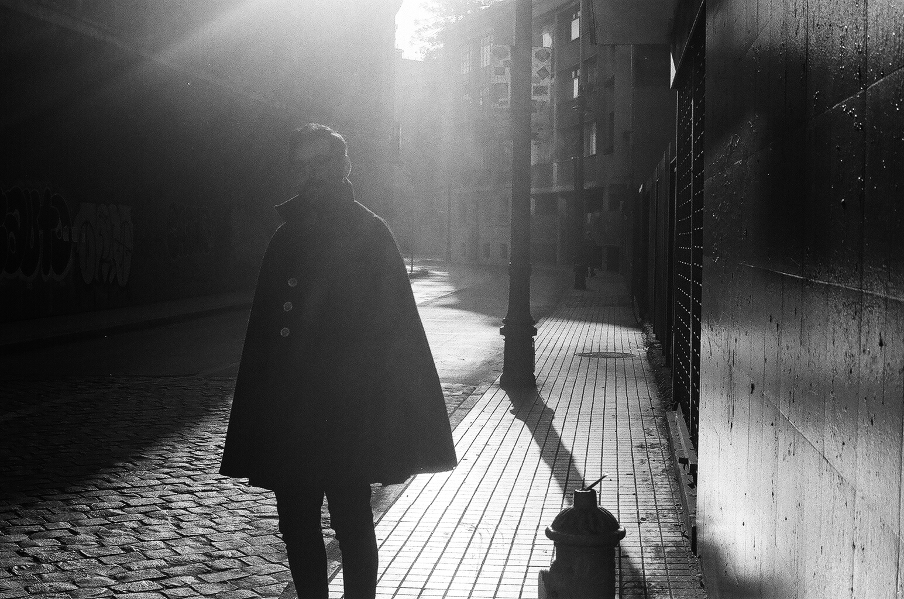

Acerca de

CV. Los Andes Góticos es un proyecto de Yerko Muñoz-Salinas (Santiago, 1991). El autor es profesor y cientista social. Recibió el grado de doctor en educación de la Pontificia Universidad Católica de Chile (2022) y en su ejercicio profesional se especializa en el estudio de la creatividad, las emociones y la formación docente. Ha participado en distintos conjuntos musicales (corales e instrumentales) y se interesa por la composición y la traducción. Cree que vivimos en el peor de los mundos posibles.